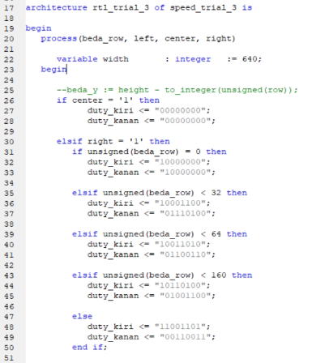
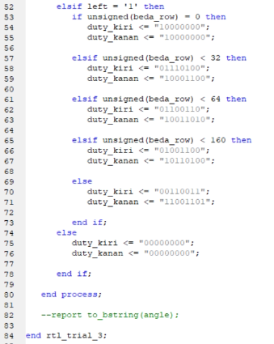
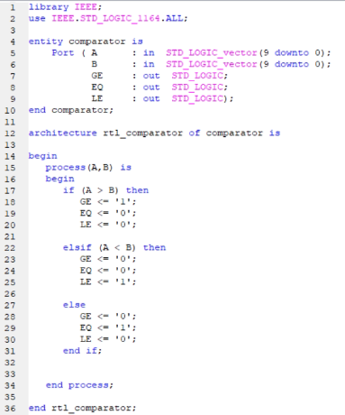
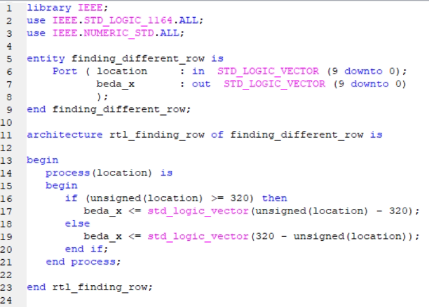
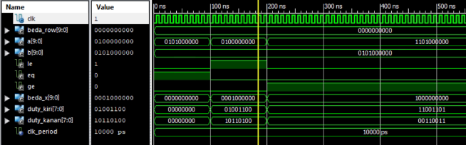

➤ Hasil dan Analisa
Percobaan Ketiga
Gambar ini mirip dengan yang ada pada percobaan kedua, tetapi bedanya ada tambahan left right center untuk memberitahu arahnya dan beda row untuk memeriksa perbedaan jarak dari tengah layer yang dihitung oleh comparator (dibahas nanti).
Tidak ada yang berubah dari architecture ini. Yang dibedakan adalah variabelnya dikurangi secara drastic dan hanya menyisakan width sebagai lebar layar.
Disini juga tidak ada yang berubah, makanya tidak akan dijelaskan lebih lanjut.
Komparator ini dibuat untuk membandingkan arahnya dengan A sebagai input letak cahaya dan B merupakan bagian tengah layer. Bila A lebih besar dari B maka komparator akan membuat GE (atau kiri) menjadi 1 dan membuat yang lain jadi 0. Bila A lebih kecil dari B maka LE (atau kanan) menjadi 1 dan membuat yang lain menjadi 0. Bila tidak ada, maka yang dibuat menjadi 1 hanyalah EQ.
Disini adalah komponen yang dipakai untuk membuat
Dan inilah hasilnya.
Idealnya rangkaian ini juga dapat mengalkulasikan kecepatan maju mundurnya dengan cara menerima lebar cahayanya juga. Tetapi karena bagian light detection tidak dapat memberikan lebar cahayanya, speed and direction decision hanya dapat membuat robot berotasi sampai lurus dengan cahaya.